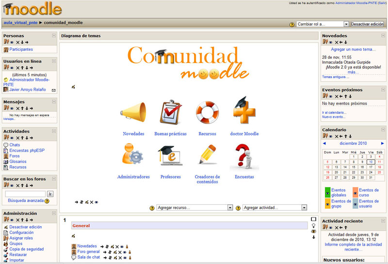

Promueve una manera constructiva social (colaboración, actividades, reflexión
crítica, etc.). Su arquitectura y herramientas fueron diseñadas para clases en
línea, así como también para complementar el aprendizaje presencial.
La instalación requiere una plataforma que soporte PHP y la disponibilidad de
una base de datos. Moodle tiene una capa de abstracción de bases de datos por
lo que soporta los principales sistemas gestores de bases de datos.

Se ha puesto énfasis en una seguridad sólida en toda la plataforma. Todos los
formularios son revisados, las cookies cifradas, etc. La mayoría de las áreas
de introducción de texto (materiales, mensajes de los foros, entradas de los
diarios, etc.) pueden ser editadas usando el editor HTML, tan sencillo como
cualquier editor de texto.
Tutorial de cómo instalarlo en localhost con XAMPP